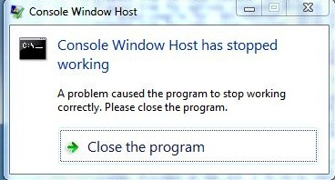
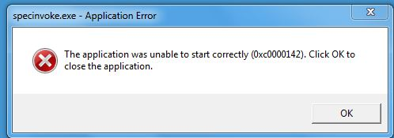

Last updated: $Date: 2011-08-16 18:43:20 -0400 (Tue, 16 Aug 2011) $ by $Author: CloyceS $
This document has frequently asked technical questions and answers. The latest version of this document may be found at http://www.spec.org/cpu2006/Docs/faq.html.
If you are looking for the list of known problems with SPEC CPU2006, please see http://www.spec.org/cpu2006/Docs/errata.html.
Contents
Installation
Install.01 ./install.sh: /bin/sh: bad interpreter: Permission denied
Install.02 The DVD drive is on system A, but I want to install on system B. What do I do?
Install.03 Error occurred while processing: C:\Documents
Install.04 How do I uninstall?
runspec
runspec.01 Can't locate strict.pm
runspec.02 specperl: bad interpreter: No such file or directory
runspec.03 'http://xml.org/sax/features/namespaces' is not recognized by XML::SAX::ExpatXS
runspec.04 Error: Start tag for undeclared element platform_settings
Building benchmarks
Build.01 CreateProcess((null), ifort ...) failed.
Build.02 make.clean.err does not exist
Build.03 Why is it rebuilding the benchmarks?
Build.04 Is there a config file for Visual C++?
Setting up
Setup.01 hash doesn't match after copy
Setup.02 Copying executable failed
Running benchmarks
Run.01 What's this specrand thing?
Run.02 Why does this benchmark take so long to run?
Run.03 Why was there this cryptic message from the operating system?
Run.04 Console Window Host has stopped working; specinvoke unable to start 0xc0000142
Miscompares
Miscompare.01 I got a message about a miscompare
Miscompare.02 The benchmark took less than 1 second
Miscompare.03 The .mis file says "short"
Miscompare.04 My compiler is generating bad code!
Miscompare.05 The code is bad even with low optimization!
Miscompare.06 The .mis file is just a bunch of numbers.
Results reporting
Results.01 Where did the reference times go?
Results.02 It's hard to cut/paste into my spreadsheet
Results.03 What is a "flags file"? What does Unknown Flags mean?
Results.04 Submission Check -> FAILED
a. If you are installing from the DVD, check to be sure that your operating system allows programs to be executed from the DVD. For example, some Linux man pages for mount suggest setting the properties for the CD or DVD drive in /etc/fstab to "/dev/cdrom /cd iso9660 ro,user,noauto,unhide", which is notably missing the property "exec". Add exec to that list in /etc/fstab, or add it to your mount command. Notice that the sample Linux mount command in install-guide-unix.html does include exec.
Perhaps install.sh lacks permission to run because you tried to copy all the files from the DVD, in order to move them to another system. If so, please don't do that. There's an easier way. See the next question.
a. The installation guides have an appendix just for you, which describe installing from the network or installing from a tarfile. See Appendix 1 in install-guide-unix.html or install-guide-windows.html.
I was installing on Windows using the tar file. It said:
C:\Documents and Settings\John\cpu2006> install The environment variable SPEC should point to the source of the SPEC distribution as an absolute path. I will now try to set the variable for you... SPEC is set to C:\Documents and Settings\John\cpu2006 If this is NOT what you want, press control-C Press any key to continue . . . Installing from "C:\Documents and Settings\John\cpu2006" Checking the integrity of your source tree... Depending on the amount of memory in your system, and the speed of your destination disk, this may take more than 10 minutes. Please be patient. The system cannot find the file specified. Error occurred while processing: C:\Documents. The system cannot find the file specified. Error occurred while processing: and. The system cannot find the path specified. C:\Documents and Settings\John\cpu2006\tools\bin\windows-i386\specmd5sum: MANIFEST.tmp: no properly formatted MD5 checksum lines found Package integrity check failed! Installation NOT completed!
a. The problem is that the SPEC tools do NOT support spaces in path names. Sorry. This is a limitation of the SPEC toolset and there are currently no plans to change this requirement. Please use a path that does not contain spaces.
a. You are correct that uninstall.sh does not remove the whole product; it only removes the SPEC tool set, and does not affect the benchmarks (which consume the bulk of the disk space). At this time, SPEC does not provide an uninstall utility for the suite as a whole. But it's easy to do: on Unix systems, use rm -Rf on the directory where you installed the suite, for example:
rm -Rf /home/cs3000/saturos/spec/cpu2006
On Windows systems, select the top directory in Windows Explorer and delete it.
If you have been using the output_root feature, you will have to track those down separately. See the suggested commands in the appendix about uninstalling, in the install guides.
Note: instead of deleting the entire directory tree, some users find it useful to keep the config and result subdirectories, while deleting everything else.
D:\cpu2006>runspec --help Can't locate strict.pm in @INC (@INC contains: .) at D:\cpu2006\bin\runspec line 62. BEGIN failed--compilation aborted at D:\cpu2006\bin\runspec line 62.
a. You can't use runspec if its path is not set correctly. On Unix, Linux, or Mac OS X, you should source shrc or cshrc, as described in runspec.html section 2.4. For Windows, please edit shrc.bat and make the adjustments described in the comments. Then, execute that file, as described in runspec.html section 2.5.
bash: /cpu2006newdir/bin/runspec: /cpu2006/bin/specperl: bad interpreter: No such file or directory
a. Did you move the directory where runspec was installed? If so, you can probably put everything to rights, just by going to the new top of the directory tree and typing "bin/relocate".
For example, the following unwise sequence of events is repaired after completion of the final line.
Top of SPEC benchmark tree is '/cpu2006' Everything looks okay. cd to /cpu2006, source the shrc file and have at it! $ cd /cpu2006 $ . ./shrc $ cd .. $ mv cpu2006 cpu2006newdir $ runspec -h | head bash: runspec: command not found $ cd cpu2006newdir/ $ . ./shrc $ runspec --help | head bash: /cpu2006newdir/bin/runspec: /cpu2006/bin/specperl: bad interpreter: No such file or directory $ bin/relocate
a. The problem is that the ExpatXS module as built on SuSE 10.1 requires a type of code relocation that SELinux does not want to allow. For SPEC CPU2006 V1.1, several workarounds were suggested: enable relocations for the offending object, or turn off SELinux, or try a different toolset. For CPU2006 V1.2, the problem is not expected to occur.
I installed SPEC CPU2006 V1.2, and now my runspec command exits immediately, with this message:
ERROR: An error was encountered while parsing the flag description file
at /cpu2006/V1.2/config/Oracle-Solaris-Studio12.2.xml
Output from the XML validator follows:
-----------
Error: Start tag for undeclared element platform_settings
in unnamed entity at line 91 char 19
a. The problem above is that although the named file (/cpu2006/V1.2/config/Oracle-Solaris-Studio12.2.xml) has useful information about the tested platform, the information needs to be updated and put into new locations. For SPEC CPU2006 V1.2, instead of using a platform element, you need to use a platform file. The message above is telling you that there is no element named "platform_settings" (as of V1.2).
An example of how to fix SPEC CPU2006 V1.1 flags files to match the SPEC CPU2006 V1.2 format is available in flag-description.html.
You must fix this problem in order to proceed, because runspec exits immediately if flags files are improperfly formatted. (Or, you could do your run with no flags files at all, and then add them back in afterwards with rawformat --flagsurl. This tactic will allow your run to proceed, but the results wll be marked invalid until you apply the flags.)
Error with make 'specmake build': check file 'D:/cpu2006/benchspec/CPU2006/410.bwaves/run/build_base_cpu2006.win32.fast.exe.0000/make.err' Error with make! *** Error building 410.bwaves ----- make.err: process_begin: CreateProcess((null), ifort -c -Foblock_solver.obj -Ox block_solver.f, ...) failed. make (e=2): The system cannot find the file specified. specmake: *** [block_solver.obj] Error 2
a. This CreateProcess failure occurs on Windows when specmake cannot find your compiler. (Recall from system-requirements.html that the benchmarks are supplied in source code form, and that they must be compiled.)
The reason that it cannot find your compiler is, most likely, because:
To fix your problem, investigate and address both items.
In shrc.bat, you need to either:
Reference a vendor-supplied file that sets the path.
The supplied shrc.bat in V1.2 mentions sample .bat files that are often provided by compilers to set your environment. If you want to use this option but you can't find the right file, check your compiler documentation, or you might try searching your hard drive for *vars*bat.
The file names change frequently; check your compiler docs.
For example, for Visual Studio 10, you might use something like call "C:\Program Files (x86)\Microsoft Visual Studio 10.0\Common7\Tools\vsvars32.bat" but for older compilers, you might need to look for vcvars32.bat, not vsvars32.bat.
For example, when using the (mid-2011) Intel compiler, to select 32 or
64-bit mode, you must remember
to add the appropriate argument after the call. This statement requests 32-bit mode:
call
"C:\Program Files (x86)\Intel\ComposerXE-2011\bin\compilervars.bat" ia32
For example, when using the PGI 11.7 compiler, the path varies depending
on whether you are using 32 or 64-bit mode:
call "c:\Program Files\PGI\win64\11.7\pgi_env.bat"
or
call "c:\Program Files (x86)\PGI\win32\11.7\pgi_env.bat"
Summary: your call statement will vary, by compiler, by version, and sometimes, by features. Check your compiler's documentation, to find the right call.
Or, edit the path yourself.
You can set the path yourself if you like, with commands such as:
set PATH=%PATH%;"c:\program files\path\to\my\compiler\bin"
If you want to use option b, but you can't figure out what path to set, try looking in the documentation for your compiler under topics such as "setting the path", or "command line", or "environment variables". The documentation should mention whether any other environment variables (such as LIB or INCLUDE) are required, in addition to PATH.
You must also use a config file that is appropriate for your compiler. Microsoft C++ users: please see below.
The tools print a message such as:
Building 401.bzip2 ref base cpu2006.win32.fast.exe default: (build_base_cpu2006.win32.fast.exe.0000) Error with make.clean 'specmake clean': check file 'D:/cpu2006/benchspec/CPU2006/401.bzip2/run/build_base_cpu2006fast.exe.0000/make.clean.err' *** Error building 401.bzip2 If you wish to ignore this error, please use '-I' or ignore errors.
But on investigation, the file make.clean.err does not exist. Why not?
a. A missing .err file has been reported on Microsoft Windows if a path from shrc.bat uses quoted strings that include semicolons within the quotes, such as:
set PATH="%PATH%;d:\My Compiler Path\bin" <--- wrong set PATH="%PATH%;d:\mycompiler\bin" <--- wrong
Paths such as the above may appear to work if you enter them at the command line. But when the tools call CreateProcess, they cause mysterious-seeming failures. The correct way to do it is:
set PATH=%PATH%;"d:\My Compiler Path\bin"
or
set PATH=%PATH%;d:\mycompiler\bin
Notice that in both cases, there are no semicolons inside of quotes.
a. You changed something, and the tools thought that it might affect the generated binaries. Note that as of V1.1, unexpected rebuilds should be greatly reduced.
a. Yes, but they are incomplete. In your directory %SPEC%\config\ there are config files that can be used to compile all but one of the C/C++ benchmarks:
%SPEC%\config\Example-windows-ia32-visualstudio.cfg
or
%SPEC%\config\Example-windows-amd64-visualstudio.cfg
but (as of July 2011) these will not compile 462.libquantum. Please read the comments carefully in the above config files, to understand their limitations.
Users of Microsoft Visual C++ should also please note that the config files from results posted with the Intel C++ compiler are not appropriate for you, nor is the file %SPEC%\config\Example-windows-ia32-icl.cfg on your kit. The Intel compiler has additional switches that the Microsoft compiler does not recognize, and it spells the compiler name differently ("icl" vs. "cl").
I got this strange, difficult to reproduce message:
hash doesn't match after copy ... in copy_file (1 try total)! Sleeping 2 seconds...
followed by several more tries and sleeps. Why?
a. During benchmark setup, certain files are checked. If they don't match what they are expected to, you might see this message. Check:
If the condition persists, try turning up the verbosity level. Look at the files with other tools; do they exist? Can you see differences? Try a different disk and controller. And, check for the specific instance of this message described in the next question.
I got this strange, difficult to reproduce message:
ERROR: Copying executable to run directory FAILED
or
ERROR: Copying executable from build dir to exe dir FAILED!
along with the bit about hashes not matching from the previous question. Why?
a. Perhaps you have attempted to build the same benchmark twice in two simultaneous jobs.
On most operating systems, the SPEC tools don't mind concurrent jobs. They use your operating system's locking facilities to write the correct outputs to the correct files, even if you fire off many runspec commands at the same time.
But there's one case of simultaneous building that is difficult for the tools to defend against: please don't try to build the very same executable from two different jobs at the same time. Notice that if you say something like this:
$ tail myconfig.cfg 445.gobmk=peak: basepeak=yes $ runspec --config myconfig --size test --tune base 445.gobmk & $ runspec --config myconfig --size test --tune peak 445.gobmk &
then you are trying to build the same benchmark twice in two different jobs, because of the presence of basepeak=yes. Please don't try to do that.
During a run, 998.specrand and 999.specrand are mentioned. Why? For example;
Benchmarks selected: 400.perlbench, 401.bzip2, 403.gcc, 429.mcf, 445.gobmk,
456.hmmer, 458.sjeng, 462.libquantum, 464.h264ref, 471.omnetpp, 473.astar,
483.xalancbmk, 999.specrand
.
.
.
Running 473.astar test peak submitted default (1 copy)
Running 483.xalancbmk test peak submitted default (1 copy)
Running 999.specrand test peak submitted default (1 copy)
a. Several of the benchmarks use a common random number generator. During development of CPU2006, it was often useful to have the random number generator as a separate pseudo-benchmark, to help with problem diagnosis. ("You miscompared on benchmark mumble? Hmmm. Do you also miscompare on specrand?")
For the released version of the suite, SPEC decided to retain specrand, in case it comes in useful for later problem diagnosis. It is run with both the integer and floating point suites, but its time is not reported, and its performance does not contribute to the bottom line metrics.
You'll find more information about specrand at http://www.spec.org/cpu2006/Docs/999.specrand.html.
a. Please understand that the suite has been designed to be useful for at least 5 years. Benchmarks that seem slow today probably will not seem slow at the end of life of the suite. You can see a bit more on this topic at question 17 of readme1st.html.
a. If you are getting cryptic, hard-to-reproduce, unpredictable error messages from your system, one possible reason may be that the benchmarks consume substantial resources, of several types. If an OS runs out of some resource - for example, pagefile space, or process heap space - it might not give you a very clear message. Instead, you might see only a very brief message, or a diaolog box with a hex error code in it. Please see the hints and suggestions in the section about resources in system-requirements.html.
It was reported that under Windows7 with SP1, a user saw SPEC CPU2006 benchmark failures
and this dialog box:

which, after pressing the button, was followed by:

The problem was difficult to diagnose, because the problem sometimes moved around (showing up at different stages of the run), with slight variations in the symptoms (e.g. which dialog boxes appeared). Eventually, it was noticed that an older (pre-Windows 7) version of cygwin was present in the %PATH%; removing cygwin from the %PATH% removed the failures.
Because the version of cygwin was obsolete, it would be unfair to "blame" it for the failures!
Nevertheless, it may be fair to point out that providing a Unix-like environment on Windows poses difficult problems. Historically there have been various approaches, with differing (incompatible) assumptions about how to mask or bridge differences between Windows and Unix. The SPEC CPU toolset has its own approach and its own set of assumptions, and this is not the first report of a difficult-to-diagnose error when a Windows/Unix compatibility product is present on the path.
Therefore, SPEC recommends that, in general, you should remove items from your path that are not needed, and, in particular, that you should remove Windows/Unix compatibility products from the %PATH% prior to invoking runspec.
If you see odd error messages such as the above, please remove any such products from the PATH prior to requesting support from SPEC.
New with CPU2006 V1.2, the utility printpath is documented, with an example of using it for the purpose of studying the path and then removing cygwin.
Running Benchmarks
Running 999.specrand ref base oct09a default
Error with '/spec/cpu2006/bin/specinvoke -E -d /spec/cp
u2006/benchspec/CPU2006/999.specrand/run/run_base_ref_o
ct09a.0000 -c 1 -e compare.err -o compare.stdout -f com
pare.cmd': check file '/spec/cpu2006/benchspec/CPU2006/
999.specrand/run/run_base_ref_oct09a.0000/.err'
*** Miscompare of rand.234923.out, see /spec/cpu2006/be
nchspec/CPU2006/999.specrand/run/run_base_ref_oct09a.00
00/rand.234923.out.mis
Error: 1x999.specrand
Producing Reports
mach: default
ext: oct09a
size: ref
set: int
set: fp
|
Why did it say that? What's the problem?
a. We don't know. Many things can cause a benchmark to miscompare, so we really can't tell you exactly what's wrong based only on the fact that a miscompare occurred.
But don't panic.
Please notice, if you read the message carefully, that there's a suggestion of a very specific file to look in. It may be a little hard to read if you have a narrow terminal window, as in the example above, but if you look carefully you'll see that it says:
*** Miscompare of rand.234923.out, see /spec/cpu2006/benchspec/CPU2006/999.specrand/run/run_base_ref_oct09a.0000/rand.234923.out.mis
Now's the time to look inside that file. Simply doing so may provide a clue as to the nature of your problem.
On Unix systems, change your current directory to the run directory using the path mentioned in the message, for example:
cd /spec/cpu2006/benchspec/CPU2006/999.specrand/run/run_base_ref_oct09a.0000/
On Microsoft Windows systems, remember to turn the slashes backwards in your cd command.
Then, have a look at the file that was mentioned, using your favorite text editor. If the file does not exist, then check your paths, and check to see whether you have run out of disk space.
a. If the benchmark took less than 1 second to execute, it didn't execute properly. There should be one or more .err files in the run directory which will contain some clues about why the benchmark failed to run. Common causes include libraries that were used for compilation but not available during the run, executables that crash with access violations or other exceptions, and permissions problems. See also the suggestions in the next question.
'rand.234923.out' short
What does "short" mean?
a. If a line like the above is the only line in the .mis file, it means that the benchmark failed to produce any output. In this case, the corresponding error file (look for files with .err extensions in the run directory) may have a clue. In this case, it was Segmentation Fault - core dumped. For problems like this, the first things to examine are the portability flags used to build the benchmark.
Have a look at the sample config files in $SPEC/config or, on Windows, %SPEC%\config. If you constructed your own config file based on one of those, maybe you picked a starting point that was not really appropriate (e.g. you picked a 32-bit config file but are using 64-bit compilation options). Have a look at other samples in that directory. Check at www.spec.org/cpu2006 to see if there have been any result submissions using the platform that you are trying to test. If so, compare your portability flags to the ones in the the config files for those results.
If the portability flags are okay, your compiler may be generating bad code.
a. Try reducing the optimization that the compiler is doing. Instructions for doing this will vary from compiler to compiler, so it's best to ask your compiler vendor for advice if you can't figure out how to do it for yourself.
a. If you're using a beta compiler, try dropping down to the last released version, or get a newer copy of the beta. If you're using a version of GCC that shipped with your OS, you may want to try getting a "vanilla" (no patches) version and building it yourself.
a. In this case, the benchmark is probably running, but it's not generating answers that are within the tolerances set. See the suggestions for how to deal with compilers that generate bad code in the previous two questions. In particular, you might see if there is a way to encourage your compiler to be careful about optimization of floating point expressions.
I was reading an HTML (or PDF or PS) report and see that in the table SPEC now prints all three observations as both seconds and ratio, with the bold underlined item for the median. Although this is useful, CPU2000 results reports included the reference times in their own column, and I miss them. Yes, I understand that the ratio is defined as reference time / observed time, so I could calculate the reference times by simple multiplication. Nevertheless, it was nice having them handy in the previous report format.
a. They are still fairly easy to locate. The text format still prints them on every line (just like CPU2000), so if you go up to the top of your browser and change the .pdf (or .whichever) to .txt, you'll find the reference times.
a. Please don't do that. With CPU2006, there's a handy .csv format file right next to the other result formats on the index page. Or, you can go up to the top of your browser and change the .pdf (or .whichever) to .csv
a. SPEC CPU2006 provides benchmarks in source code form, which are compiled under control of SPEC's toolset. Compilation flags (such as -O5 or -unroll) are detected and reported by the tools with the help of flag description files. Therefore, to do a complete run, you need to (1) point to an existing flags file (easy) or (2) modify an existing flags file (slightly harder) or (3) write one from scratch (definitely harder).
Notice that you do not need to re-run your tests if the only problem was Unknown flags. You can just use runspec --rawformat --flagsurl
At the end of my run, why did it print something like this?
format: Submission Check -> FAILED. Found the following errors:
- The "hw_memory" field is invalid.
It must contain leading digits, followed by a space,
and a standard unit abbreviation. Acceptable
abbreviations are KB, MB, GB, and TB.
The current value is "20480 Megabytes".
a. A complete, reportable result has various information filled in for readers. These fields are listed in the table of contents for config.html. If you wish to submit a result to SPEC for publication at www.spec.org/cpu2006, these fields not only have to be filled in; they also have to follow certain formats. Although you are not required to submit your result to SPEC, for convenience the tools try to tell you as much as they can about how the result should be improved if you were to submit it. In the above example, the tools would stop complaining if the field hw_memory said something like "20 GB" instead of "20480 Megabytes".
Notice that you can repair minor formatting problems such as these without doing a re-run of your tests. You are allowed to edit the rawfile, as described in utility.html.
Copyright 2006-2011 Standard Performance Evaluation Corporation
All Rights Reserved